When working with multiple samples, there may be technical batch effects between them that interfere with real biological signal. These samples are perfectly fine to be analyzed separately and internally consistent, but comparing across the samples or joining their expression information will run into issues if there are batch effects. These effects are most obvious when examining them colored in by batch in dimension reductions such as PCA and UMAP. Here we work through an excerpt from the visium prostate example to highlight the necessity of data integration, and walk through how it can be dealt with in Giotto via {Harmony}.
# Ensure Giotto Suite is installed
if(!"Giotto" %in% installed.packages()) {
pak::pkg_install("drieslab/Giotto")
}
library(Giotto)
# Ensure the Python environment for Giotto has been installed
genv_exists <- checkGiottoEnvironment()
if(!genv_exists){
# The following command need only be run once to install the Giotto environment
installGiottoEnvironment()
}The Visium Normal Prostate data to run this tutorial can be found here
The Visium Cancer Prostate data to run this tutorial can be found here
Download the normal and cancer dataset info to separate directories called
curl links from 10x genomics
# Normal
curl -O https://cf.10xgenomics.com/samples/spatial-exp/1.3.0/Visium_FFPE_Human_Normal_Prostate/Visium_FFPE_Human_Normal_Prostate_raw_feature_bc_matrix.tar.gz
curl -O https://cf.10xgenomics.com/samples/spatial-exp/1.3.0/Visium_FFPE_Human_Normal_Prostate/Visium_FFPE_Human_Normal_Prostate_spatial.tar.gz
# Cancer
curl -O https://cf.10xgenomics.com/samples/spatial-exp/1.3.0/Visium_FFPE_Human_Prostate_Cancer/Visium_FFPE_Human_Prostate_Cancer_raw_feature_bc_matrix.tar.gz
curl -O https://cf.10xgenomics.com/samples/spatial-exp/1.3.0/Visium_FFPE_Human_Prostate_Cancer/Visium_FFPE_Human_Prostate_Cancer_spatial.tar.gzWithin these folders, unzip the .gz files.
# This dataset must be downloaded manually; please do so and change the path below as appropriate
data_path <- "/path/to/data/"
## normal
N_pros <- createGiottoVisiumObject(
visium_dir = file.path(data_path, "Visium_FFPE_Human_Normal_Prostate"),
gene_column_index = 2
)
## cancer
C_pros <- createGiottoVisiumObject(
visium_dir = file.path(data_path, "Visium_FFPE_Human_Prostate_Cancer/"),
gene_column_index = 2
)We can combine these two datasets to analyze them together using
joinGiottoObjects(). Since these are spatial datasets, we
also define how they share the coordinate space by specifying that we
want join_method = "shift" to make sure that the second
dataset is shifted over to prevent overlapping, and additionally apply
an x_padding of 1000 units between the two datasets.
# join giotto objects
g <- joinGiottoObjects(gobject_list = list(N_pros, C_pros),
gobject_names = c("NP", "CP"),
join_method = "shift",
x_padding = 1000
)Joining objects also appends a prefix to the cell_ID values and adds
a metadata column called "list_ID" based on the
gobject_names that were provided during the join operation. This makes
it easy to refer to the cells/visium spots that belonged to each
original dataset.
pDataDT(g) cell_ID in_tissue array_row array_col list_ID
<char> <int> <int> <int> <char>
1: NP-AAACAACGAATAGTTC-1 0 0 16 NP
2: NP-AAACAAGTATCTCCCA-1 1 50 102 NP
3: NP-AAACAATCTACTAGCA-1 1 3 43 NP
4: NP-AAACACCAATAACTGC-1 0 59 19 NP
5: NP-AAACAGAGCGACTCCT-1 1 14 94 NP
---
9979: CP-TTGTTTCACATCCAGG-1 1 58 42 CP
9980: CP-TTGTTTCATTAGTCTA-1 1 60 30 CP
9981: CP-TTGTTTCCATACAACT-1 1 45 27 CP
9982: CP-TTGTTTGTATTACACG-1 0 73 41 CP
9983: CP-TTGTTTGTGTAAATTC-1 1 7 51 CPFor the first step of processing, lets remove the spots that are
already annotated to not be within the tissue. This is a standard piece
of metadata (called "in_tissue") that is provided with
Visium datasets. A value of 0 means that the spot is off the tissue. If
it is 1 then it is in the tissue. The source of these annotations are
from the Visium SpaceRanger pipeline wherein in tissue or not was
determined based on either machine vision approaches or manual
annotations.
If we had loaded the filtered expression matrix instead then we would not need to perform this step.
# filter to in-tissue spots
g <- subset(g, subset = in_tissue == 1)
g <- filterGiotto(g,
expression_threshold = 1,
feat_det_in_min_cells = 50,
min_det_feats_per_cell = 500
)
# normalize
g <- normalizeGiotto(g)
# find highly variable (interesting) features to build PCA space on
g <- calculateHVF(g)
# dimension reductions
g <- runPCA(g) # screePlot (omitted) finds first 10 PCs as sufficient
g <- runUMAP(g, dimensions_to_use = 1:10)We can now plot the Visium spots in PCA and UMAP dimension reduction spaces to gauge how much batch effect there is between the two samples.
We can color the cells based on the 'list_ID' that is
recorded in the cell metadata (pDataDT()) which
differentiates which sample the spots are from in the joined object.
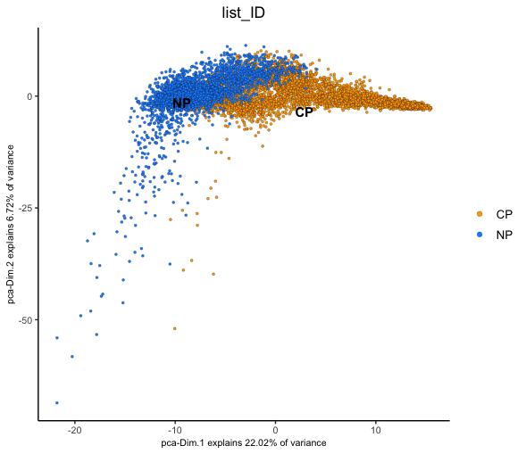
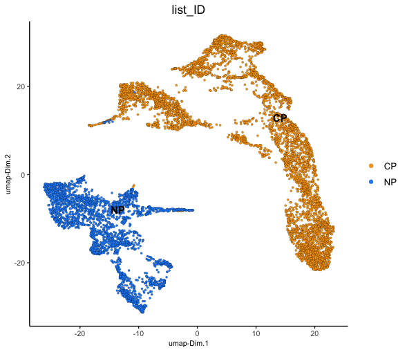
From both of these dimension reductions, you can see that the spots corresponding to each of the two datasets generally cluster based on which sample they were from. This technical difference will overwhelm any real biological information and complicate cell clustering/typing.
To illustrate this, we can continue on with network creation on the PCA space and then use that network with Leiden community detection clustering. These clusters can then be plotted in UMAP and spatial.
g <- createNearestNetwork(g, dimensions_to_use = 1:10, k = 15)
g <- doLeidenCluster(g, resolution = 0.1, n_iterations = 1000)
plotUMAP(g, cell_color = "leiden_clus")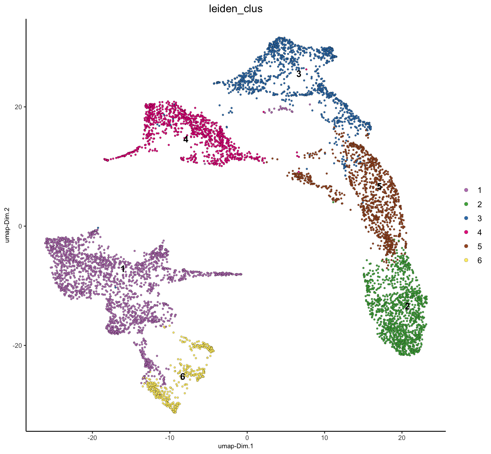
spatPlot2D(g, cell_color = "leiden_clus", point_size = 1.5, background_color = "black")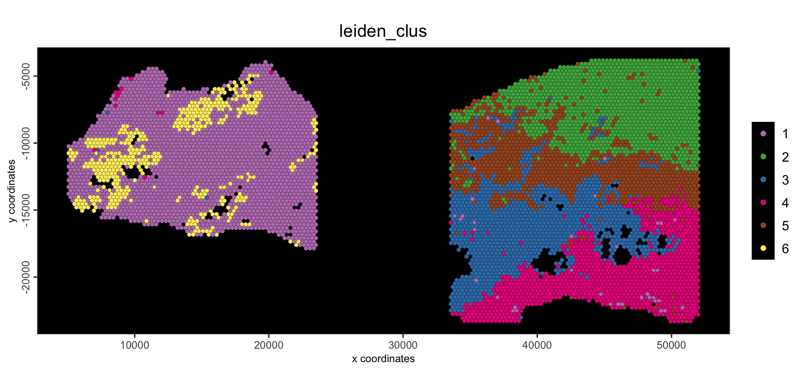
As shown, the spots have been clustered, but most clusters are not shared between the two samples. This is biologically unrealistic since this is the same tissue, and we would expect at least some tissue/celltype similarity between the two.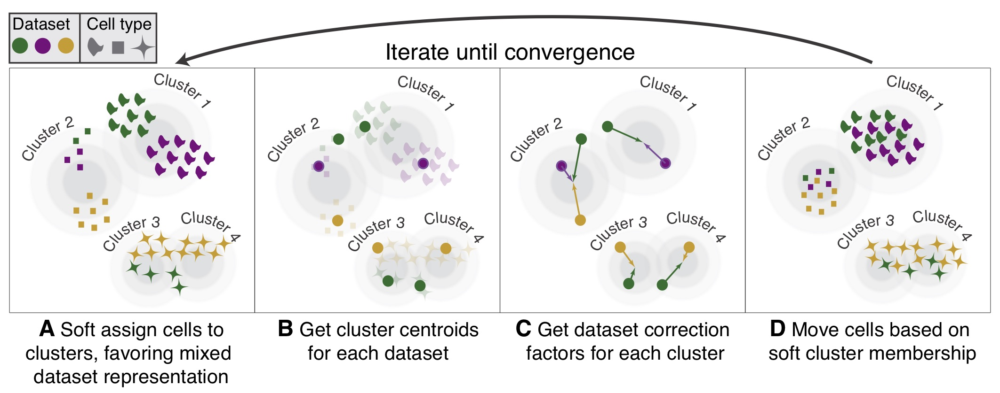
{Harmony} is an algorithm for integrating multiple datasets that may contain batch effects or other unwanted variations. It does not edit the raw expression values, but instead creates a new embedding space starting from the PCA coordinates of the two batches.
It iteratively performs kmeans clustering and determines the probability that a particular data point belongs to cluster/batch combinations, with an optimization to ensure that clusters contain a mix of the different batches, with the proportion being based on batch size.
For each cluster-batch combination, correction vectors are computed that indicate how cells from that batch should be shifted in the PCA space to align with other batches in the same cluster. Each data point receives a personalized correction based on its probability of belonging to each cluster. These iterative corrections are performed until the distance shifted by data points falls below a threshold, after which the process has converged.
To run harmony, we use runGiottoHarmony(). Under the
hood, this function calls ?harmony::RunHarmony().
Additional parameters can be passed through
runGiottoHarmony() to the underlying function to fine tune
this process.
theta - A param to encourage diversity. Default value
is 2. Setting higher will push clusters to have more balanced
compositions, while lower values will focus more on the original
structure of the data (minimum is 0 for no diversity).sigma - A fine tuner for the width of soft kmeans
clusters. The default is 0.1. Larger values will attempt to assign cells
to more clusters, smaller values will approach hard clustering.lambda - The ridge regression penalty. Default value is
1. Higher values will make harmony more conservative in correction
steps, producing more stable results for datasets with small clusters. A
lower value with larger corrective values may be preferred when batch
effects are subtle and hard to remove.max_iter - Maximum number of harmony iterations to
attempt.nclust - For each iteration, harmony runs kmeans soft
clustering on the data. This value is the k used for the
kmeans operation. If not set, harmony autodetects a good value, with a
cap of 200.early_stop - whether to stop early when the change in
objective function between iterations is less than 1e-4, suggesting that
it has plateaued and converged. This is TRUE by
defaultplot_convergence - whether to plot the flow of the
harmony integration. The plot is color coded by iteration, and the y
axis shows the objective function value. Default is
FALSE
Here we run the harmony asking it to remove the
"list_ID" variable encoding which Visium experiment the
data point was from. We are running with the default params, but with
plot_convergence = TRUE to show the process.
g <- runGiottoHarmony(g,
vars_use = "list_ID",
dimensions_to_use = 1:10,
plot_convergence = TRUE
)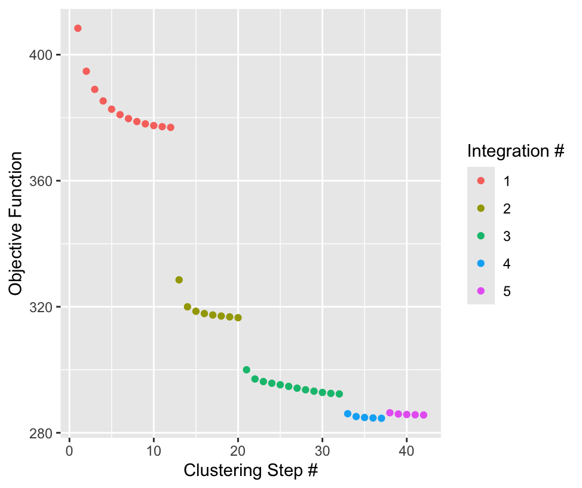
Giotto’s functions are designed with a general pipeline that defaults
to the expected naming of pieces of data. We have now generated a
Harmony embedding space that can be used for the same purposes that PCAs
were used before. It was then saved into the object with the default
name "harmony"
To specify to use the Harmony integrated embedding, downstream functions should set the params:
dim_reduction_to_use = "harmony"dim_reduction_name = "harmony"to make sure that correct data is being used.
This data can also be extracted from the Giotto object if desired via
getDimReduction().
dr <- getDimReduction(g, reduction_method = "harmony")
force(dr)
plot(dr, dims = c(1,3))
force(head(dr[]))This is what the Giotto dimObj subobject wrapping the
harmony results looks like.
An object of class dimObj : "harmony"
--| Contains dimension reduction generated with: harmony
----| for feat_type: rna
----| spat_unit: cell
10 dimensions for 6911 data pointsdimObj results can be plotted. Dimensions to plot in the
embedding can be directly selected with the dims param.
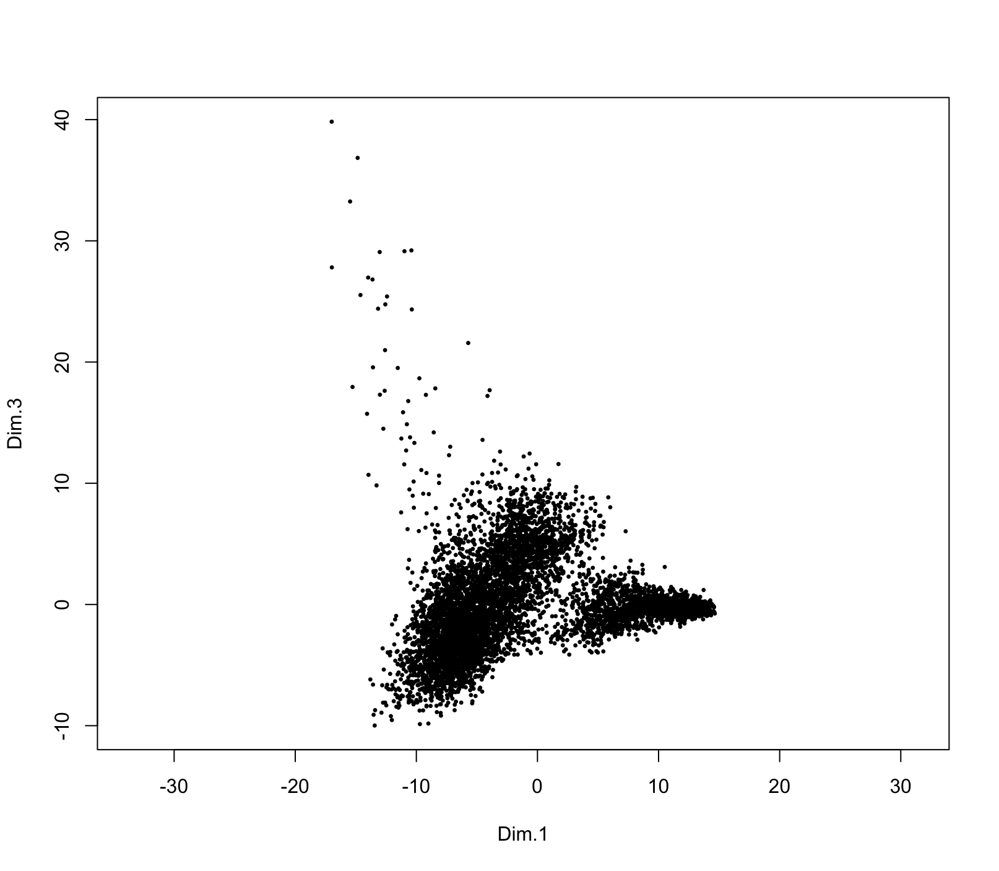
[] can be used to drop to the underlying data in
matrix format.
Dim.1 Dim.2 Dim.3 Dim.4 Dim.5 Dim.6 Dim.7
NP-AAACAAGTATCTCCCA-1 -3.1766253 5.8705249 5.328317 1.6442363 -0.1436606 -0.8688798 -0.9010619
NP-AAACAATCTACTAGCA-1 -2.0855007 0.3947395 2.309797 -0.6706464 1.1686240 0.6302800 -0.1268585
NP-AAACAGAGCGACTCCT-1 -1.4810571 6.2864825 8.350323 -3.5477192 -3.3828694 2.0942278 5.8820618
NP-AAACAGCTTTCAGAAG-1 2.8197790 5.4262710 6.356100 0.8566221 5.8707294 1.0707420 -3.8117018
NP-AAACCCGAACGAAATC-1 -0.6701118 4.9606763 4.892263 -1.4726606 -4.3686678 1.7104363 -1.3597488
NP-AAACCGGAAATGTTAA-1 -8.0808756 -0.0582710 -3.573888 1.1697874 -3.3392619 -0.3717885 -0.3739460
Dim.8 Dim.9 Dim.10
NP-AAACAAGTATCTCCCA-1 -5.404626 2.2215454 -1.4836180
NP-AAACAATCTACTAGCA-1 1.019352 0.4409166 -3.1431069
NP-AAACAGAGCGACTCCT-1 6.926648 3.4467640 2.2796472
NP-AAACAGCTTTCAGAAG-1 -2.175927 -0.3666277 0.2871348
NP-AAACCCGAACGAAATC-1 -8.205272 -4.1348940 -13.9792953
NP-AAACCGGAAATGTTAA-1 -4.360484 -1.8335872 -0.4195350
# recalculate UMAP using Harmony embedding space
g <- runUMAP(g,
dim_reduction_name = "harmony",
dim_reduction_to_use = "harmony",
name = "umap_harmony",
dimensions_to_use = 1:10
)
# Calculate Nearest Network for use with community clustering using the harmony results.
g <- createNearestNetwork(g,
dim_reduction_to_use = "harmony",
dim_reduction_name = "harmony",
name = "NN.harmony",
dimensions_to_use = 1:10,
k = 15
)
# Calculate Leiden Clusters using the harmony results
g <- doLeidenCluster(g,
network_name = "NN.harmony",
resolution = 0.1,
n_iterations = 1000,
name = "leiden_harmony"
)
# Plot
plotUMAP(g,
dim_reduction_name = "umap_harmony",
cell_color = "leiden_harmony"
)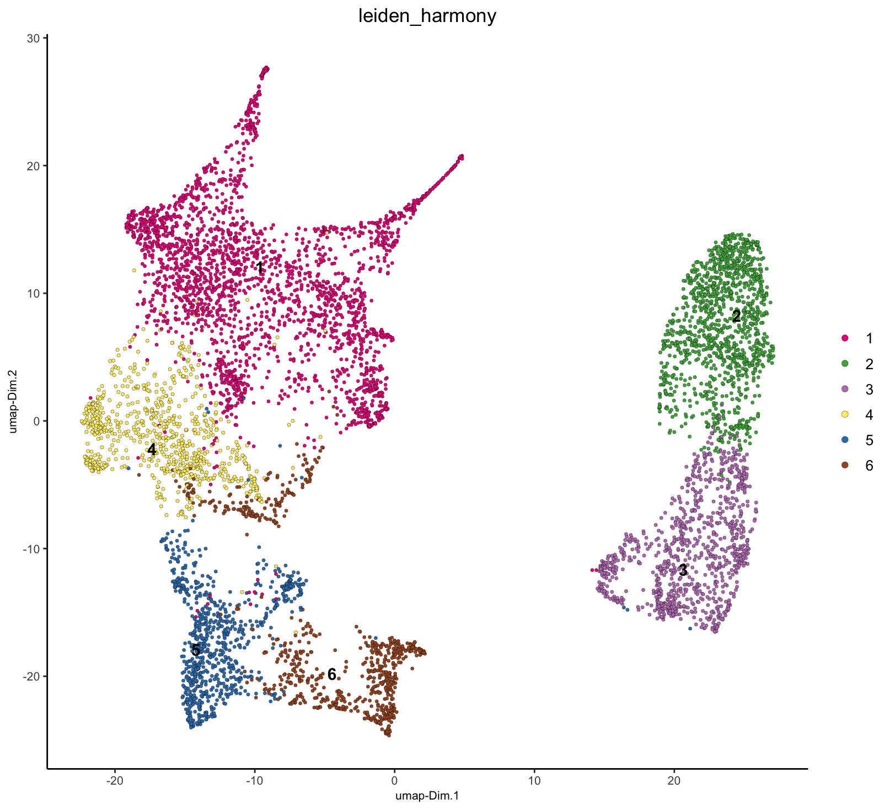
spatPlot2D(g,
cell_color = "leiden_harmony",
point_size = 1.5,
background = "black"
)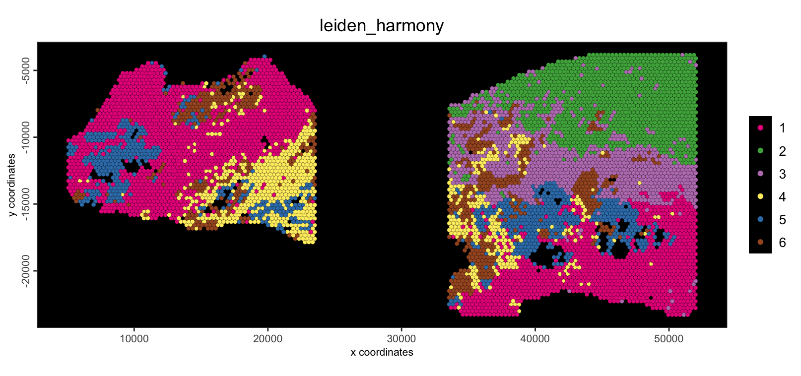
We are now seeing that there are several shared clusters between the two datasets for similar tissue/cell types. The green and purple populations, however, are exclusive to the Cancer sample.
Now the major separation seen in the UMAP is based on Normal vs Cancer tissue instead of by sample, a separation that is actually expected and biologically interesting. We can see this by looking at the H&E morphology where the upper right region is densely stained for nuclei, suggesting cancer.
spatPlot2D(g,
point_alpha = 0,
show_image = TRUE,
image_name = c("NP-image", "CP-image")
)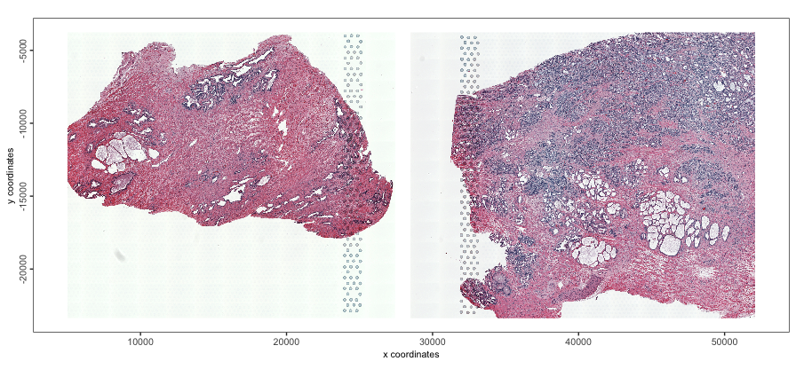
Plotting some specific markers (AMACR, ERG, TMPRSS3, HOXC6), that are known to show overexpression in prostate cancer further confirms this region as being cancerous.
dimFeatPlot2D(g,
feats = c("AMACR", "ERG", "TMPRSS2", "HOXC6"),
point_size = 0.6,
gradient_style = "sequential",
dim_reduction_name = "umap_harmony",
background = "black"
)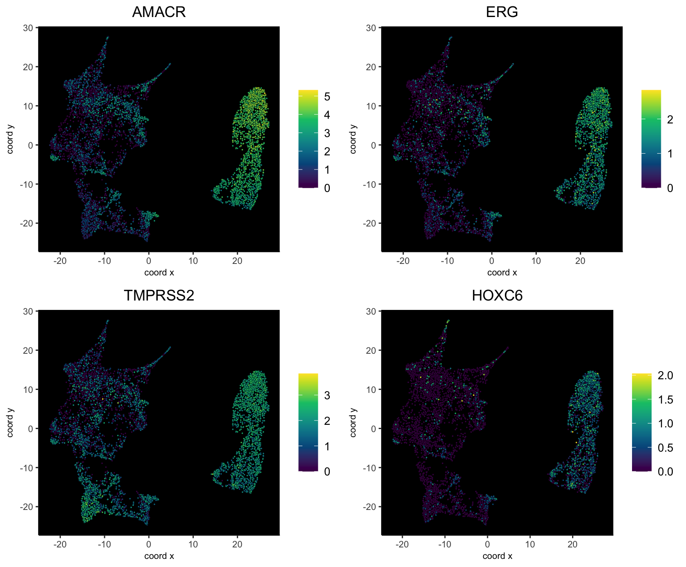
spatFeatPlot2D(g,
feats = c("AMACR", "ERG", "TMPRSS2", "HOXC6"),
point_size = 1.5,
gradient_style = "sequential",
scale_alpha_with_expression = TRUE,
show_image = TRUE,
image_name = c("NP-image", "CP-image")
)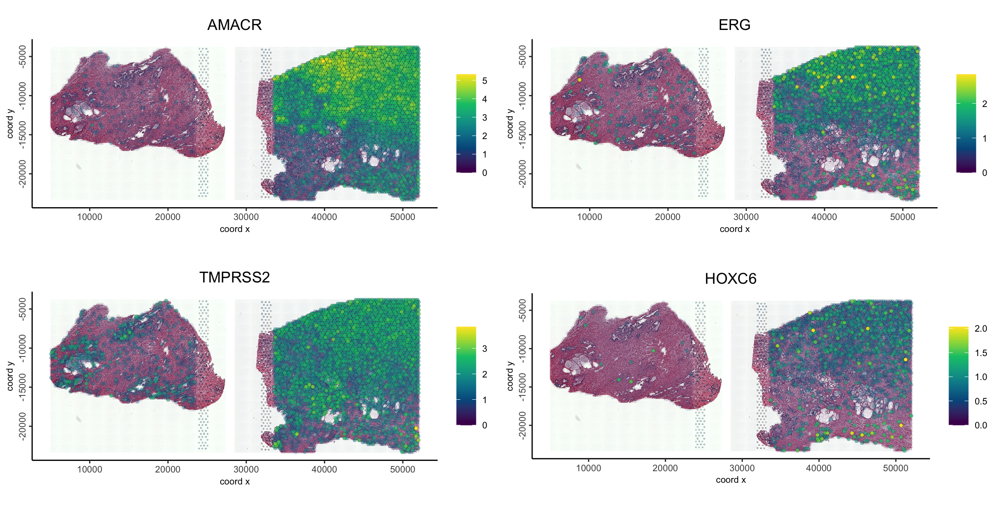
These show that there is orthogonal support from the morphological and molecular information that the Harmony integration worked correctly, preserving the biological signal while removing batch effects.
R version 4.4.1 (2024-06-14)
Platform: aarch64-apple-darwin20
Running under: macOS 15.3.1
Matrix products: default
BLAS: /System/Library/Frameworks/Accelerate.framework/Versions/A/Frameworks/vecLib.framework/Versions/A/libBLAS.dylib
LAPACK: /Library/Frameworks/R.framework/Versions/4.4-arm64/Resources/lib/libRlapack.dylib; LAPACK version 3.12.0
locale:
[1] en_US.UTF-8/en_US.UTF-8/en_US.UTF-8/C/en_US.UTF-8/en_US.UTF-8
time zone: America/New_York
tzcode source: internal
attached base packages:
[1] stats graphics grDevices utils datasets methods base
other attached packages:
[1] GiottoVisuals_0.2.12 Giotto_4.2.1 testthat_3.2.1.1 GiottoClass_0.4.7
loaded via a namespace (and not attached):
[1] RcppAnnoy_0.0.22 later_1.3.2 tibble_3.2.1
[4] R.oo_1.26.0 polyclip_1.10-7 dbMatrix_0.0.0.9023
[7] lifecycle_1.0.4 edgeR_4.2.0 rprojroot_2.0.4
[10] globals_0.16.3 lattice_0.22-6 MASS_7.3-60.2
[13] crosstalk_1.2.1 backports_1.5.0 magrittr_2.0.3
[16] limma_3.60.0 plotly_4.10.4 rmarkdown_2.29
[19] yaml_2.3.10 remotes_2.5.0 metapod_1.12.0
[22] httpuv_1.6.15 sessioninfo_1.2.2 pkgbuild_1.4.4
[25] reticulate_1.39.0 cowplot_1.1.3 RColorBrewer_1.1-3
[28] abind_1.4-8 pkgload_1.3.4 zlibbioc_1.50.0
[31] GenomicRanges_1.56.0 purrr_1.0.2 R.utils_2.12.3
[34] ggraph_2.2.1 BiocGenerics_0.50.0 tweenr_2.0.3
[37] GenomeInfoDbData_1.2.12 IRanges_2.38.0 S4Vectors_0.42.0
[40] ggrepel_0.9.6 irlba_2.3.5.1 listenv_0.9.1
[43] terra_1.8-29 parallelly_1.38.0 dqrng_0.4.1
[46] DelayedMatrixStats_1.26.0 colorRamp2_0.1.0 codetools_0.2-20
[49] DelayedArray_0.30.0 scuttle_1.14.0 ggforce_0.4.2
[52] tidyselect_1.2.1 UCSC.utils_1.0.0 farver_2.1.2
[55] ScaledMatrix_1.12.0 viridis_0.6.5 matrixStats_1.4.1
[58] stats4_4.4.1 GiottoData_0.2.15 jsonlite_1.8.9
[61] BiocNeighbors_1.22.0 progressr_0.14.0 ellipsis_0.3.2
[64] tidygraph_1.3.1 ggridges_0.5.6 systemfonts_1.1.0
[67] dbscan_1.2-0 tools_4.4.1 ragg_1.3.2
[70] Rcpp_1.0.13-1 glue_1.8.0 gridExtra_2.3
[73] SparseArray_1.4.1 xfun_0.49 MatrixGenerics_1.16.0
[76] usethis_2.2.3 GenomeInfoDb_1.40.0 dplyr_1.1.4
[79] withr_3.0.2 fastmap_1.2.0 bluster_1.14.0
[82] fansi_1.0.6 digest_0.6.37 rsvd_1.0.5
[85] R6_2.5.1 mime_0.12 textshaping_0.3.7
[88] colorspace_2.1-1 scattermore_1.2 gtools_3.9.5
[91] R.methodsS3_1.8.2 RhpcBLASctl_0.23-42 utf8_1.2.4
[94] tidyr_1.3.1 generics_0.1.3 data.table_1.16.2
[97] graphlayouts_1.1.1 httr_1.4.7 htmlwidgets_1.6.4
[100] S4Arrays_1.4.0 uwot_0.2.3 pkgconfig_2.0.3
[103] gtable_0.3.6 SingleCellExperiment_1.26.0 XVector_0.44.0
[106] brio_1.1.5 htmltools_0.5.8.1 profvis_0.3.8
[109] scales_1.3.0 Biobase_2.64.0 GiottoUtils_0.2.4
[112] png_0.1-8 harmony_1.2.0 SpatialExperiment_1.14.0
[115] geometry_0.4.7 scran_1.32.0 knitr_1.49
[118] rstudioapi_0.16.0 rjson_0.2.21 magic_1.6-1
[121] checkmate_2.3.2 cachem_1.1.0 stringr_1.5.1
[124] parallel_4.4.1 miniUI_0.1.1.1 desc_1.4.3
[127] pillar_1.9.0 grid_4.4.1 vctrs_0.6.5
[130] urlchecker_1.0.1 promises_1.3.0 BiocSingular_1.20.0
[133] beachmat_2.20.0 xtable_1.8-4 cluster_2.1.6
[136] evaluate_1.0.1 magick_2.8.5 cli_3.6.3
[139] locfit_1.5-9.9 compiler_4.4.1 rlang_1.1.4
[142] crayon_1.5.3 future.apply_1.11.2 labeling_0.4.3
[145] fs_1.6.5 stringi_1.8.4 viridisLite_0.4.2
[148] BiocParallel_1.38.0 munsell_0.5.1 lazyeval_0.2.2
[151] devtools_2.4.5 Matrix_1.7-0 future_1.34.0
[154] sparseMatrixStats_1.16.0 ggplot2_3.5.1 statmod_1.5.0
[157] shiny_1.9.1 SummarizedExperiment_1.34.0 igraph_2.1.1
[160] memoise_2.0.1